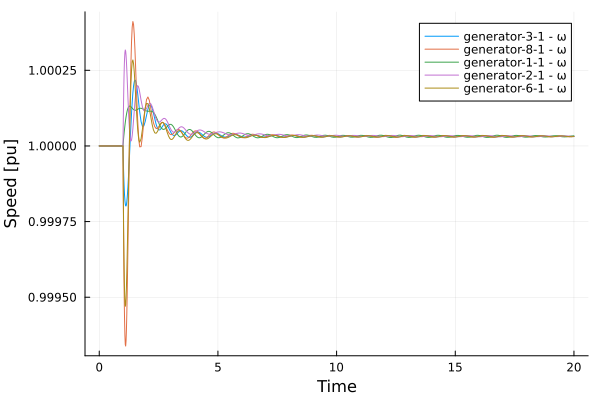
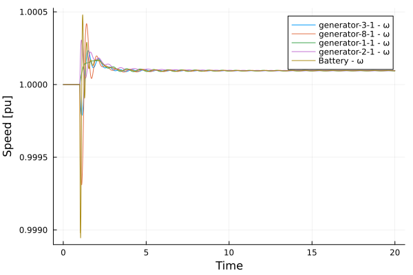

Inverter Modeling simulation
Originally Contributed by: José Daniel Lara
Introduction
This tutorial will introduce the modeling of an inverter with Virtual Inertia in a multi-machine model of the system. We will load the data directly from PSS/e dynamic files.
The tutorial uses a modified 14-bus system on which all the synchronous machines have been substituted by generators with ESAC1A AVR's and no Turbine Governors.
In the first portion of the tutorial we will simulate the system with the original data and cause a line trip between Buses 2 and 4. In the second part of the simulation, we will switch generator 6 with a battery using an inverter and perform the same fault.
Load the packages
julia> using PowerSimulationsDynamicsjulia> using PowerSystemCaseBuilderjulia> using PowerSystemsjulia> const PSY = PowerSystemsPowerSystemsjulia> using PowerFlowsjulia> using Loggingjulia> using Sundialsjulia> using Plots
PowerSystemCaseBuilder.jl is a helper library that makes it easier to reproduce examples in the documentation and tutorials. Normally you would pass your local files to create the system data instead of calling the function build_system. For more details visit PowerSystemCaseBuilder Documentation
Create the system
julia> sys = build_system(PSIDSystems, "14 Bus Base Case")┌ Info: Building new system 14 Bus Base Case from raw data └ sys_descriptor.raw_data = "/home/runner/.julia/artifacts/3d522279f3d1b233566dda9ad1f332ed9bb545a3/PowerSystemsTestData-1.0.3/psid_tests/data_examples" [ Info: The PSS(R)E parser currently supports buses, loads, shunts, generators, branches, transformers, and dc lines [ Info: The PSS(R)E parser currently supports buses, loads, shunts, generators, branches, transformers, and dc lines [ Info: The following fields in GENERATOR are missing: O2, F2, O3, F3, O4, F4, WMOD, WPF [ Info: The following fields in GENERATOR are missing: O2, F2, O3, F3, O4, F4, WMOD, WPF [ Info: The following fields in GENERATOR are missing: O2, F2, O3, F3, O4, F4, WMOD, WPF [ Info: The following fields in GENERATOR are missing: O2, F2, O3, F3, O4, F4, WMOD, WPF [ Info: The following fields in GENERATOR are missing: O2, F2, O3, F3, O4, F4, WMOD, WPF [ Info: The following fields in BRANCH are missing: O2, F2, O3, F3, O4, F4 [ Info: The following fields in BRANCH are missing: O2, F2, O3, F3, O4, F4 [ Info: The following fields in BRANCH are missing: O2, F2, O3, F3, O4, F4 [ Info: The following fields in BRANCH are missing: O2, F2, O3, F3, O4, F4 [ Info: The following fields in BRANCH are missing: O2, F2, O3, F3, O4, F4 [ Info: The following fields in BRANCH are missing: O2, F2, O3, F3, O4, F4 [ Info: The following fields in BRANCH are missing: O2, F2, O3, F3, O4, F4 [ Info: The following fields in BRANCH are missing: O2, F2, O3, F3, O4, F4 [ Info: The following fields in BRANCH are missing: O2, F2, O3, F3, O4, F4 [ Info: The following fields in BRANCH are missing: O2, F2, O3, F3, O4, F4 [ Info: The following fields in BRANCH are missing: O2, F2, O3, F3, O4, F4 [ Info: The following fields in BRANCH are missing: O2, F2, O3, F3, O4, F4 [ Info: The following fields in BRANCH are missing: O2, F2, O3, F3, O4, F4 [ Info: The following fields in BRANCH are missing: O2, F2, O3, F3, O4, F4 [ Info: The following fields in BRANCH are missing: O2, F2, O3, F3, O4, F4 [ Info: The following fields in BRANCH are missing: O2, F2, O3, F3, O4, F4 [ Info: Parsing PSS(R)E Bus data into a PowerModels Dict... [ Info: Parsing PSS(R)E Load data into a PowerModels Dict... [ Info: Parsing PSS(R)E Shunt data into a PowerModels Dict... [ Info: Parsing PSS(R)E Generator data into a PowerModels Dict... [ Info: Parsing PSS(R)E Branch data into a PowerModels Dict... [ Info: Parsing PSS(R)E Transformer data into a PowerModels Dict... [ Info: Parsing PSS(R)E Two-Terminal and VSC DC line data into a PowerModels Dict... ┌ Warning: This PSS(R)E parser currently doesn't support Storage data parsing... └ @ PowerSystems ~/.julia/packages/PowerSystems/qRmML/src/parsers/pm_io/psse.jl:967 ┌ Warning: This PSS(R)E parser currently doesn't support Switch data parsing... └ @ PowerSystems ~/.julia/packages/PowerSystems/qRmML/src/parsers/pm_io/psse.jl:973 [ Info: angmin and angmax values are 0, widening these values on branch 4 to +/- 60.0 deg. [ Info: angmin and angmax values are 0, widening these values on branch 1 to +/- 60.0 deg. [ Info: angmin and angmax values are 0, widening these values on branch 12 to +/- 60.0 deg. [ Info: angmin and angmax values are 0, widening these values on branch 20 to +/- 60.0 deg. [ Info: angmin and angmax values are 0, widening these values on branch 2 to +/- 60.0 deg. [ Info: angmin and angmax values are 0, widening these values on branch 6 to +/- 60.0 deg. [ Info: angmin and angmax values are 0, widening these values on branch 11 to +/- 60.0 deg. [ Info: angmin and angmax values are 0, widening these values on branch 13 to +/- 60.0 deg. [ Info: angmin and angmax values are 0, widening these values on branch 5 to +/- 60.0 deg. [ Info: angmin and angmax values are 0, widening these values on branch 15 to +/- 60.0 deg. [ Info: angmin and angmax values are 0, widening these values on branch 16 to +/- 60.0 deg. [ Info: angmin and angmax values are 0, widening these values on branch 14 to +/- 60.0 deg. [ Info: angmin and angmax values are 0, widening these values on branch 7 to +/- 60.0 deg. [ Info: angmin and angmax values are 0, widening these values on branch 8 to +/- 60.0 deg. [ Info: angmin and angmax values are 0, widening these values on branch 17 to +/- 60.0 deg. [ Info: angmin and angmax values are 0, widening these values on branch 10 to +/- 60.0 deg. [ Info: angmin and angmax values are 0, widening these values on branch 19 to +/- 60.0 deg. [ Info: angmin and angmax values are 0, widening these values on branch 9 to +/- 60.0 deg. [ Info: angmin and angmax values are 0, widening these values on branch 18 to +/- 60.0 deg. [ Info: angmin and angmax values are 0, widening these values on branch 3 to +/- 60.0 deg. [ Info: this code only supports positive rate_a values, changing the value on branch 4 to 651.7693 [ Info: this code only supports positive rate_a values, changing the value on branch 1 to 1943.3753 [ Info: this code only supports positive rate_a values, changing the value on branch 12 to 1340.1421 [ Info: this code only supports positive rate_a values, changing the value on branch 20 to 686.916 [ Info: this code only supports positive rate_a values, changing the value on branch 2 to 527.2551 [ Info: this code only supports positive rate_a values, changing the value on branch 6 to 658.7239 [ Info: this code only supports positive rate_a values, changing the value on branch 11 to 1099.9023 [ Info: this code only supports positive rate_a values, changing the value on branch 13 to 404.9974 [ Info: this code only supports positive rate_a values, changing the value on branch 5 to 661.3166 [ Info: this code only supports positive rate_a values, changing the value on branch 15 to 406.1471 [ Info: this code only supports positive rate_a values, changing the value on branch 16 to 312.073 [ Info: this code only supports positive rate_a values, changing the value on branch 14 to 579.3328 [ Info: this code only supports positive rate_a values, changing the value on branch 7 to 2739.0808 [ Info: this code only supports positive rate_a values, changing the value on branch 8 to 548.9677 [ Info: this code only supports positive rate_a values, changing the value on branch 17 to 578.6164 [ Info: this code only supports positive rate_a values, changing the value on branch 10 to 828.1844 [ Info: this code only supports positive rate_a values, changing the value on branch 19 to 480.1216 [ Info: this code only supports positive rate_a values, changing the value on branch 9 to 426.3491 [ Info: this code only supports positive rate_a values, changing the value on branch 18 to 217.5559 [ Info: this code only supports positive rate_a values, changing the value on branch 3 to 594.6825 ┌ Info: Constructing System from Power Models │ data["name"] = "14bus" └ data["source_type"] = "pti" [ Info: Reading bus data [ Info: Reading Load data in PowerModels dict to populate System ... [ Info: Reading LoadZones data in PowerModels dict to populate System ... [ Info: Reading generator data ┌ Warning: Invalid range │ valid_info.struct_name = "ThermalStandard" │ field_name = "active_power_limits" │ valid_range = Dict{String, Any} with 2 entries: … │ valid_info.ist_struct = │ generator-6-1 (ThermalStandard): │ name: generator-6-1 │ available: true │ status: true │ bus: BUS 06 (Bus) │ active_power: 0.15 │ reactive_power: 0.14800000000000002 │ rating: 99.99028802838804 │ active_power_limits: (min = -99.99, max = 99.99) │ reactive_power_limits: (min = -0.06, max = 0.24) │ ramp_limits: (up = 24.9975, down = 24.9975) │ operation_cost: ThreePartCost │ base_power: 25.0 │ time_limits: nothing │ must_run: false │ prime_mover: PrimeMovers.OT = 19 │ fuel: ThermalFuels.OTHER = 14 │ services: 0-element Vector{Service} │ time_at_status: 10000.0 │ dynamic_injector: nothing │ ext: Dict{String, Any}("z_source" => (r = 0.0, x = 0.12)) │ time_series_container: │ InfrastructureSystems.SystemUnitsSettings: │ base_value: 100.0 │ unit_system: UnitSystem.SYSTEM_BASE = 0 └ @ InfrastructureSystems ~/.julia/packages/InfrastructureSystems/XFCqE/src/validation.jl:219 ┌ Warning: Invalid range │ valid_info.struct_name = "ThermalStandard" │ field_name = "active_power_limits" │ valid_range = Dict{String, Any} with 2 entries: … │ valid_info.ist_struct = │ generator-1-1 (ThermalStandard): │ name: generator-1-1 │ available: true │ status: true │ bus: BUS 01 (Bus) │ active_power: 1.9333000000000002 │ reactive_power: 0.01121 │ rating: 100.48880584423323 │ active_power_limits: (min = -99.99, max = 99.99) │ reactive_power_limits: (min = -10.0, max = 10.0) │ ramp_limits: (up = 614.9385, down = 614.9385) │ operation_cost: ThreePartCost │ base_power: 615.0 │ time_limits: nothing │ must_run: false │ prime_mover: PrimeMovers.OT = 19 │ fuel: ThermalFuels.OTHER = 14 │ services: 0-element Vector{Service} │ time_at_status: 10000.0 │ dynamic_injector: nothing │ ext: Dict{String, Any}("z_source" => (r = 0.0, x = 0.23)) │ time_series_container: │ InfrastructureSystems.SystemUnitsSettings: │ base_value: 100.0 │ unit_system: UnitSystem.SYSTEM_BASE = 0 └ @ InfrastructureSystems ~/.julia/packages/InfrastructureSystems/XFCqE/src/validation.jl:219 ┌ Warning: Invalid range │ valid_info.struct_name = "ThermalStandard" │ field_name = "active_power_limits" │ valid_range = Dict{String, Any} with 2 entries: … │ valid_info.ist_struct = │ generator-8-1 (ThermalStandard): │ name: generator-8-1 │ available: true │ status: true │ bus: BUS 08 (Bus) │ active_power: 0.1 │ reactive_power: 0.22292 │ rating: 99.99028802838804 │ active_power_limits: (min = -99.99, max = 99.99) │ reactive_power_limits: (min = -0.06, max = 0.24) │ ramp_limits: (up = 24.9975, down = 24.9975) │ operation_cost: ThreePartCost │ base_power: 25.0 │ time_limits: nothing │ must_run: false │ prime_mover: PrimeMovers.OT = 19 │ fuel: ThermalFuels.OTHER = 14 │ services: 0-element Vector{Service} │ time_at_status: 10000.0 │ dynamic_injector: nothing │ ext: Dict{String, Any}("z_source" => (r = 0.0, x = 0.12)) │ time_series_container: │ InfrastructureSystems.SystemUnitsSettings: │ base_value: 100.0 │ unit_system: UnitSystem.SYSTEM_BASE = 0 └ @ InfrastructureSystems ~/.julia/packages/InfrastructureSystems/XFCqE/src/validation.jl:219 ┌ Warning: Invalid range │ valid_info.struct_name = "ThermalStandard" │ field_name = "active_power_limits" │ valid_range = Dict{String, Any} with 2 entries: … │ valid_info.ist_struct = │ generator-2-1 (ThermalStandard): │ name: generator-2-1 │ available: true │ status: true │ bus: BUS 02 (Bus) │ active_power: 0.3 │ reactive_power: 0.27015999999999996 │ rating: 99.99125011719775 │ active_power_limits: (min = -99.99, max = 99.99) │ reactive_power_limits: (min = -0.4, max = 0.5) │ ramp_limits: (up = 59.99399999999999, down = 59.99399999999999) │ operation_cost: ThreePartCost │ base_power: 60.0 │ time_limits: nothing │ must_run: false │ prime_mover: PrimeMovers.OT = 19 │ fuel: ThermalFuels.OTHER = 14 │ services: 0-element Vector{Service} │ time_at_status: 10000.0 │ dynamic_injector: nothing │ ext: Dict{String, Any}("z_source" => (r = 0.0, x = 0.13)) │ time_series_container: │ InfrastructureSystems.SystemUnitsSettings: │ base_value: 100.0 │ unit_system: UnitSystem.SYSTEM_BASE = 0 └ @ InfrastructureSystems ~/.julia/packages/InfrastructureSystems/XFCqE/src/validation.jl:219 ┌ Warning: Invalid range │ valid_info.struct_name = "ThermalStandard" │ field_name = "active_power_limits" │ valid_range = Dict{String, Any} with 2 entries: … │ valid_info.ist_struct = │ generator-3-1 (ThermalStandard): │ name: generator-3-1 │ available: true │ status: true │ bus: BUS 03 (Bus) │ active_power: 0.2 │ reactive_power: 0.21719000000000002 │ rating: 99.99080007680706 │ active_power_limits: (min = -99.99, max = 99.99) │ reactive_power_limits: (min = 0.0, max = 0.4) │ ramp_limits: (up = 59.99399999999999, down = 59.99399999999999) │ operation_cost: ThreePartCost │ base_power: 60.0 │ time_limits: nothing │ must_run: false │ prime_mover: PrimeMovers.OT = 19 │ fuel: ThermalFuels.OTHER = 14 │ services: 0-element Vector{Service} │ time_at_status: 10000.0 │ dynamic_injector: nothing │ ext: Dict{String, Any}("z_source" => (r = 0.0, x = 0.13)) │ time_series_container: │ InfrastructureSystems.SystemUnitsSettings: │ base_value: 100.0 │ unit_system: UnitSystem.SYSTEM_BASE = 0 └ @ InfrastructureSystems ~/.julia/packages/InfrastructureSystems/XFCqE/src/validation.jl:219 [ Info: Reading branch data [ Info: Reading branch data [ Info: Reading DC Line data [ Info: Reading storage data [ Info: Generators provided in .dyr, without a generator in .raw file will be skipped. ┌ Warning: struct DynamicGenerator does not exist in validation configuration file, validation skipped └ @ InfrastructureSystems ~/.julia/packages/InfrastructureSystems/XFCqE/src/validation.jl:51 ┌ Warning: struct DynamicGenerator does not exist in validation configuration file, validation skipped └ @ InfrastructureSystems ~/.julia/packages/InfrastructureSystems/XFCqE/src/validation.jl:51 ┌ Warning: struct DynamicGenerator does not exist in validation configuration file, validation skipped └ @ InfrastructureSystems ~/.julia/packages/InfrastructureSystems/XFCqE/src/validation.jl:51 ┌ Warning: struct DynamicGenerator does not exist in validation configuration file, validation skipped └ @ InfrastructureSystems ~/.julia/packages/InfrastructureSystems/XFCqE/src/validation.jl:51 ┌ Warning: struct DynamicGenerator does not exist in validation configuration file, validation skipped └ @ InfrastructureSystems ~/.julia/packages/InfrastructureSystems/XFCqE/src/validation.jl:51 ┌ Warning: Load data is transformed under the assumption of a 1.0 p.u. Voltage Magnitude └ @ PowerSystemCaseBuilder ~/.julia/packages/PowerSystemCaseBuilder/OrsMa/src/library/psidtest_library.jl:23 ┌ Warning: Load data is transformed under the assumption of a 1.0 p.u. Voltage Magnitude └ @ PowerSystemCaseBuilder ~/.julia/packages/PowerSystemCaseBuilder/OrsMa/src/library/psidtest_library.jl:23 ┌ Warning: Load data is transformed under the assumption of a 1.0 p.u. Voltage Magnitude └ @ PowerSystemCaseBuilder ~/.julia/packages/PowerSystemCaseBuilder/OrsMa/src/library/psidtest_library.jl:23 ┌ Warning: Load data is transformed under the assumption of a 1.0 p.u. Voltage Magnitude └ @ PowerSystemCaseBuilder ~/.julia/packages/PowerSystemCaseBuilder/OrsMa/src/library/psidtest_library.jl:23 ┌ Warning: Load data is transformed under the assumption of a 1.0 p.u. Voltage Magnitude └ @ PowerSystemCaseBuilder ~/.julia/packages/PowerSystemCaseBuilder/OrsMa/src/library/psidtest_library.jl:23 ┌ Warning: Load data is transformed under the assumption of a 1.0 p.u. Voltage Magnitude └ @ PowerSystemCaseBuilder ~/.julia/packages/PowerSystemCaseBuilder/OrsMa/src/library/psidtest_library.jl:23 ┌ Warning: Load data is transformed under the assumption of a 1.0 p.u. Voltage Magnitude └ @ PowerSystemCaseBuilder ~/.julia/packages/PowerSystemCaseBuilder/OrsMa/src/library/psidtest_library.jl:23 ┌ Warning: Load data is transformed under the assumption of a 1.0 p.u. Voltage Magnitude └ @ PowerSystemCaseBuilder ~/.julia/packages/PowerSystemCaseBuilder/OrsMa/src/library/psidtest_library.jl:23 ┌ Warning: Load data is transformed under the assumption of a 1.0 p.u. Voltage Magnitude └ @ PowerSystemCaseBuilder ~/.julia/packages/PowerSystemCaseBuilder/OrsMa/src/library/psidtest_library.jl:23 ┌ Warning: Load data is transformed under the assumption of a 1.0 p.u. Voltage Magnitude └ @ PowerSystemCaseBuilder ~/.julia/packages/PowerSystemCaseBuilder/OrsMa/src/library/psidtest_library.jl:23 ┌ Warning: Load data is transformed under the assumption of a 1.0 p.u. Voltage Magnitude └ @ PowerSystemCaseBuilder ~/.julia/packages/PowerSystemCaseBuilder/OrsMa/src/library/psidtest_library.jl:23 [ Info: Serialized System to /home/runner/.julia/packages/PowerSystemCaseBuilder/OrsMa/data/serialized_system/NoArgs/14 Bus Base Case.json [ Info: Serialized System metadata to /home/runner/.julia/packages/PowerSystemCaseBuilder/OrsMa/data/serialized_system/NoArgs/14 Bus Base Case_metadata.json System ┌───────────────────┬─────────────┐ │ Property │ Value │ ├───────────────────┼─────────────┤ │ Name │ │ │ Description │ │ │ System Units Base │ SYSTEM_BASE │ │ Base Power │ 100.0 │ │ Base Frequency │ 60.0 │ │ Num Components │ 77 │ └───────────────────┴─────────────┘ Static Components ┌─────────────────┬───────┬────────────────────────┬───────────────┐ │ Type │ Count │ Has Static Time Series │ Has Forecasts │ ├─────────────────┼───────┼────────────────────────┼───────────────┤ │ Arc │ 20 │ false │ false │ │ Area │ 1 │ false │ false │ │ Bus │ 14 │ false │ false │ │ Line │ 16 │ false │ false │ │ LoadZone │ 1 │ false │ false │ │ StandardLoad │ 11 │ false │ false │ │ TapTransformer │ 3 │ false │ false │ │ ThermalStandard │ 5 │ false │ false │ │ Transformer2W │ 1 │ false │ false │ └─────────────────┴───────┴────────────────────────┴───────────────┘ Dynamic Components ┌──────────────────┬───────┐ │ Type │ Count │ ├──────────────────┼───────┤ │ DynamicGenerator │ 4 │ │ DynamicGenerator │ 1 │ └──────────────────┴───────┘
PowerSystemCaseBuilder.jl is a helper library that makes it easier to reproduce examples in the documentation and tutorials. Normally you would pass your local files to create the system data.
Define Simulation Problem with a 20 second simulation period and the branch trip at t = 1.0:
julia> sim = Simulation( ResidualModel, #Type of model used sys, #system mktempdir(), #path for the simulation output (0.0, 20.0), #time span BranchTrip(1.0, Line, "BUS 02-BUS 04-i_1"); console_level = Logging.Info, )[ Info: Unit System changed to UnitSystem.DEVICE_BASE = 1 [ Info: Pre-Initializing Simulation States [ Info: Unit System changed to UnitSystem.SYSTEM_BASE = 0 [ Info: PowerFlow solve converged, the results have been stored in the system [ Info: Unit System changed to UnitSystem.DEVICE_BASE = 1 [ Info: Residual from initial guess: max = 5.029822114366311e-10 at 18, total = 2.0999521763243847e-9 Iter f(x) inf-norm Step 2-norm ------ -------------- -------------- [ Info: Initialization non-linear solve succeeded with a tolerance of 1.0e-9 using solver trust_region. Saving solution. [ Info: Attaching Perturbations [ Info: Simulations status = BUILT ┌ Info: │ ─────────────────────────────────────────────────────────────────────────────── │ Time Allocations │ ─────────────── ─────────────── │ Total measured: 3.31s 182MiB │ │ Section ncalls time %tot alloc %tot │ ─────────────────────────────────────────────────────────────────────────────── │ Build Simulation 1 3.31s 100.0% 182MiB 100.0% │ Build Simulation Inputs 1 376ms 11.4% 26.1MiB 14.4% │ Wrap Branches 1 8.30μs 0.0% 240B 0.0% │ Wrap Dynamic Injectors 1 302ms 9.1% 22.5MiB 12.4% │ Calculate MM, DAE_vector, Tota... 1 26.7ms 0.8% 2.42MiB 1.3% │ Wrap Static Injectors 1 133μs 0.0% 27.8KiB 0.0% │ Pre-initialization 1 1.35s 40.9% 85.6MiB 47.1% │ Power Flow solution 1 1.29ms 0.0% 350KiB 0.2% │ Initialize Static Injectors 1 900ns 0.0% 0.00B 0.0% │ Initialize Dynamic Injectors 1 1.35s 40.8% 85.1MiB 46.9% │ Calculate Jacobian 1 1.01s 30.6% 48.1MiB 26.5% │ Make Model Function 1 6.50μs 0.0% 1.39KiB 0.0% │ Initial Condition NLsolve refine... 1 567ms 17.1% 21.7MiB 12.0% │ Build Perturbations 1 109μs 0.0% 11.9KiB 0.0% │ Make DiffEq Problem 1 141μs 0.0% 11.6KiB 0.0% │ ─────────────────────────────────────────────────────────────────────────────── └ Simulation Summary ┌─────────────────────────┬────────────────┐ │ Property │ Value │ ├─────────────────────────┼────────────────┤ │ Status │ BUILT │ │ Simulation Type │ Residual Model │ │ Initialized? │ Yes │ │ Multimachine system? │ Yes │ │ Time Span │ (0.0, 20.0) │ │ Number of States │ 86 │ │ Number of Perturbations │ 1 │ └─────────────────────────┴────────────────┘
Now that the system is initialized, we can verify the system states for potential issues.
julia> show_states_initial_value(sim)Voltage Variables ==================== BUS 01 ==================== Vm 1.06 θ 0.0 ==================== BUS 02 ==================== Vm 1.04 θ -0.0711 ==================== BUS 03 ==================== Vm 1.01 θ -0.1787 ==================== BUS 04 ==================== Vm 1.0129 θ -0.1458 ==================== BUS 05 ==================== Vm 1.0165 θ -0.1235 ==================== BUS 06 ==================== Vm 1.06 θ -0.1949 ==================== BUS 07 ==================== Vm 1.0438 θ -0.1812 ==================== BUS 08 ==================== Vm 1.08 θ -0.1656 ==================== BUS 09 ==================== Vm 1.0263 θ -0.2102 ==================== BUS 10 ==================== Vm 1.0245 θ -0.2125 ==================== BUS 11 ==================== Vm 1.0384 θ -0.2059 ==================== BUS 12 ==================== Vm 1.0436 θ -0.2105 ==================== BUS 13 ==================== Vm 1.0372 θ -0.2119 ==================== BUS 14 ==================== Vm 1.0126 θ -0.2291 ==================== ==================== Differential States generator-3-1 ==================== eq_p 1.0649 ed_p 0.1243 ψ_kd 0.9872 ψ_kq 0.2132 δ 0.034 ω 1.0 Vm 1.01 Vr1 0.006 Vr2 2.419 Ve 1.791 Vr3 -0.0726 ==================== Differential States generator-8-1 ==================== eq_p 1.2657 ed_p 0.0462 ψ_kd 1.1584 ψ_kq 0.1748 δ 0.019 ω 1.0 Vm 1.08 Vr1 0.0097 Vr2 3.9162 Ve 2.8839 Vr3 -0.1175 ==================== Differential States generator-1-1 ==================== eq_p 1.0604 ed_p -0.0111 ψ_kd 1.0563 ψ_kq 0.1134 δ 0.1684 ω 1.0 Vm 1.06 Vr1 0.0049 Vr2 1.951 Ve 1.4049 Vr3 -0.0585 x_g1 0.3144 x_g2 0.3144 x_g3 0.3144 ==================== Differential States generator-2-1 ==================== eq_p 1.1038 ed_p 0.1491 ψ_kd 1.003 ψ_kq 0.2748 δ 0.1963 ω 1.0 Vm 1.04 Vr1 0.0071 Vr2 2.8613 Ve 2.1338 Vr3 -0.0858 ==================== Differential States generator-6-1 ==================== eq_p 1.167 ed_p 0.0955 ψ_kd 1.08 ψ_kq 0.3084 δ 0.1387 ω 1.0 Vm 1.06 Vr1 0.0082 Vr2 3.2875 Ve 2.4472 Vr3 -0.0986 ====================
We execute the simulation with an additional tolerance for the solver set at 1e-8:
julia> execute!(sim, IDA(); abstol = 1e-8)SIMULATION_FINALIZED::BUILD_STATUS = 6
Using PowerSimulationsDynamics tools for exploring the results, we can plot all the voltage results for the buses:
julia> result = read_results(sim)Simulation Results Summary ┌────────────────────────────┬─────────────┐ │ Property │ Value │ ├────────────────────────────┼─────────────┤ │ System Base Power [MVA] │ 100.0 │ │ System Base Frequency [Hz] │ 60.0 │ │ Time Span │ (0.0, 20.0) │ │ Total Time Steps │ 342 │ │ Number of States │ 86 │ │ Total solve time │ 1.696345833 │ └────────────────────────────┴─────────────┘julia> p = plot();julia> for b in get_components(Bus, sys) voltage_series = get_voltage_magnitude_series(result, get_number(b)) plot!( p, voltage_series; xlabel = "Time", ylabel = "Voltage Magnitude [pu]", label = "Bus - $(get_name(b))", ); end

We can also explore the frequency of the different generators
julia> p2 = plot();julia> for g in get_components(ThermalStandard, sys) state_series = get_state_series(result, (get_name(g), :ω)) plot!( p2, state_series; xlabel = "Time", ylabel = "Speed [pu]", label = "$(get_name(g)) - ω", ); end

It is also possible to explore the small signal stability of this system we created.
julia> res = small_signal_analysis(sim)┌ Warning: No Infinite Bus found. Confirm stability directly checking eigenvalues. │ If all eigenvalues are on the left-half plane and only one eigenvalue is zero, the system is small signal stable. └ @ PowerSimulationsDynamics ~/work/PowerSimulationsDynamics.jl/PowerSimulationsDynamics.jl/src/base/small_signal.jl:111 The system is small signal stable
The eigenvalues can be explored
julia> res.eigenvalues58-element Vector{ComplexF64}: -1000.000000000001 + 0.0im -1000.0000000000008 + 0.0im -1000.0000000000007 + 0.0im -1000.0000000000005 + 0.0im -1000.0 + 0.0im -51.83364371956075 + 0.0im -51.70455018825664 + 0.0im -51.4443744131907 - 0.018220782844780393im -51.4443744131907 + 0.018220782844780393im -51.410203503315515 + 0.0im ⋮ -0.8293800767699612 - 0.04428569213391823im -0.8293800767699612 + 0.04428569213391823im -0.6362034818563695 + 0.0im -0.5 + 0.0im -0.4682884182391468 + 0.0im -0.28233919601695484 + 0.0im -0.22910619390452502 - 7.68463570870567im -0.22910619390452502 + 7.68463570870567im 0.0 + 0.0im
Modifying the system and adding storage
Reload the system for this example:
julia> sys = build_system(PSIDS)ERROR: UndefVarError: `PSIDS` not definedjulia> # We want to remove the generator 6 and the dynamic component attached to it. thermal_gen = get_component(ThermalStandard, sys, "generator-6-1")generator-6-1 (ThermalStandard): name: generator-6-1 available: true status: true bus: BUS 06 (Bus) active_power: 0.15 reactive_power: 0.14800000000000002 rating: 99.99028802838804 active_power_limits: (min = -99.99, max = 99.99) reactive_power_limits: (min = -0.06, max = 0.24) ramp_limits: (up = 24.9975, down = 24.9975) operation_cost: ThreePartCost base_power: 25.0 time_limits: nothing must_run: false prime_mover: PrimeMovers.OT = 19 fuel: ThermalFuels.OTHER = 14 services: 0-element Vector{Service} time_at_status: 10000.0 dynamic_injector: generator-6-1 (DynamicGenerator{RoundRotorQuadratic, SingleMass, ESAC1A, TGFixed, PSSFixed}) ext: Dict{String, Any}("z_source" => (r = 0.0, x = 0.12)) time_series_container: InfrastructureSystems.SystemUnitsSettings: base_value: 100.0 unit_system: UnitSystem.SYSTEM_BASE = 0julia> remove_component!(sys, get_dynamic_injector(thermal_gen))julia> remove_component!(sys, thermal_gen)julia> # We can now define our storage device and add it to the system storage = GenericBattery( name = "Battery", bus = get_component(Bus, sys, "BUS 06"), available = true, prime_mover = PrimeMovers.BA, active_power = 0.6, reactive_power = 0.16, rating = 1.1, base_power = 25.0, initial_energy = 50.0, state_of_charge_limits = (min = 5.0, max = 100.0), input_active_power_limits = (min = 0.0, max = 1.0), output_active_power_limits = (min = 0.0, max = 1.0), reactive_power_limits = (min = -1.0, max = 1.0), efficiency = (in = 0.80, out = 0.90), )Battery (GenericBattery): name: Battery available: true bus: BUS 06 (Bus) prime_mover: PrimeMovers.BA = 1 initial_energy: 1250.0 state_of_charge_limits: (min = 125.0, max = 2500.0) rating: 27.500000000000004 active_power: 15.0 input_active_power_limits: (min = 0.0, max = 25.0) output_active_power_limits: (min = 0.0, max = 25.0) efficiency: (in = 0.8, out = 0.9) reactive_power: 4.0 reactive_power_limits: (min = -25.0, max = 25.0) base_power: 25.0 operation_cost: nothing services: 0-element Vector{Service} dynamic_injector: nothing ext: Dict{String, Any}() time_series_container: internal: InfrastructureSystems.InfrastructureSystemsInternaljulia> add_component!(sys, storage)
A good sanity check it running a power flow on the system to make sure all the components are properly scaled and that the system is properly balanced. We can use PowerSystems to perform this check. We can get the results back and perform a sanity check.
julia> res = run_powerflow(sys)ERROR: UndefVarError: `run_powerflow` not definedjulia> res["bus_results"]ERROR: MethodError: no method matching getindex(::PowerSimulationsDynamics.SmallSignalOutput, ::String)
After verifying that the system works, we can define our inverter dynamics and add it to the battery that has already been stored in the system.
julia> inverter = DynamicInverter( name = get_name(storage), ω_ref = 1.0, # ω_ref, converter = AverageConverter(rated_voltage = 138.0, rated_current = 100.0), outer_control = OuterControl( VirtualInertia(Ta = 2.0, kd = 400.0, kω = 20.0), ReactivePowerDroop(kq = 0.2, ωf = 1000.0), ), inner_control = VoltageModeControl( kpv = 0.59, #Voltage controller proportional gain kiv = 736.0, #Voltage controller integral gain kffv = 0.0, #Binary variable enabling the voltage feed-forward in output of current controllers rv = 0.0, #Virtual resistance in pu lv = 0.2, #Virtual inductance in pu kpc = 1.27, #Current controller proportional gain kic = 14.3, #Current controller integral gain kffi = 0.0, #Binary variable enabling the current feed-forward in output of current controllers ωad = 50.0, #Active damping low pass filter cut-off frequency kad = 0.2, ), dc_source = FixedDCSource(voltage = 600.0), freq_estimator = KauraPLL( ω_lp = 500.0, #Cut-off frequency for LowPass filter of PLL filter. kp_pll = 0.084, #PLL proportional gain ki_pll = 4.69, #PLL integral gain ), filter = LCLFilter(lf = 0.08, rf = 0.003, cf = 0.074, lg = 0.2, rg = 0.01), )Battery (DynamicInverter{AverageConverter, OuterControl{VirtualInertia, ReactivePowerDroop}, VoltageModeControl, FixedDCSource, KauraPLL, LCLFilter}): name: Battery ω_ref: 1.0 converter: AverageConverter outer_control: OuterControl{VirtualInertia, ReactivePowerDroop} inner_control: VoltageModeControl dc_source: FixedDCSource freq_estimator: KauraPLL filter: LCLFilter base_power: 100.0 n_states: 19 states: [:θ_oc, :ω_oc, :q_oc, :ξd_ic, :ξq_ic, :γd_ic, :γq_ic, :ϕd_ic, :ϕq_ic, :vd_pll, :vq_pll, :ε_pll, :θ_pll, :ir_cnv, :ii_cnv, :vr_filter, :vi_filter, :ir_filter, :ii_filter] ext: Dict{String, Any}() internal: InfrastructureSystems.InfrastructureSystemsInternaljulia> add_component!(sys, inverter, storage)┌ Warning: struct DynamicInverter does not exist in validation configuration file, validation skipped └ @ InfrastructureSystems ~/.julia/packages/InfrastructureSystems/XFCqE/src/validation.jl:51
These are the current system components:
julia> sysSystem ┌───────────────────┬─────────────┐ │ Property │ Value │ ├───────────────────┼─────────────┤ │ Name │ │ │ Description │ │ │ System Units Base │ SYSTEM_BASE │ │ Base Power │ 100.0 │ │ Base Frequency │ 60.0 │ │ Num Components │ 77 │ └───────────────────┴─────────────┘ Static Components ┌─────────────────┬───────┬────────────────────────┬───────────────┐ │ Type │ Count │ Has Static Time Series │ Has Forecasts │ ├─────────────────┼───────┼────────────────────────┼───────────────┤ │ Arc │ 20 │ false │ false │ │ Area │ 1 │ false │ false │ │ Bus │ 14 │ false │ false │ │ GenericBattery │ 1 │ false │ false │ │ Line │ 16 │ false │ false │ │ LoadZone │ 1 │ false │ false │ │ StandardLoad │ 11 │ false │ false │ │ TapTransformer │ 3 │ false │ false │ │ ThermalStandard │ 4 │ false │ false │ │ Transformer2W │ 1 │ false │ false │ └─────────────────┴───────┴────────────────────────┴───────────────┘ Dynamic Components ┌──────────────────┬───────┐ │ Type │ Count │ ├──────────────────┼───────┤ │ DynamicGenerator │ 3 │ │ DynamicGenerator │ 1 │ │ DynamicInverter │ 1 │ └──────────────────┴───────┘
Define Simulation problem using the same parameters:
julia> sim = Simulation( ResidualModel, #Type of model used sys, #system mktempdir(), #path for the simulation output (0.0, 20.0), #time span BranchTrip(1.0, Line, "BUS 02-BUS 04-i_1"); console_level = Logging.Info, )[ Info: Unit System changed to UnitSystem.DEVICE_BASE = 1 [ Info: Pre-Initializing Simulation States [ Info: Unit System changed to UnitSystem.SYSTEM_BASE = 0 [ Info: PowerFlow solve converged, the results have been stored in the system [ Info: Unit System changed to UnitSystem.DEVICE_BASE = 1 [ Info: Residual from initial guess: max = 5.029822114366311e-10 at 18, total = 2.018604779933659e-9 Iter f(x) inf-norm Step 2-norm ------ -------------- -------------- [ Info: Initialization non-linear solve succeeded with a tolerance of 1.0e-9 using solver trust_region. Saving solution. [ Info: Attaching Perturbations [ Info: Simulations status = BUILT ┌ Info: │ ─────────────────────────────────────────────────────────────────────────────── │ Time Allocations │ ─────────────── ─────────────── │ Total measured: 1.71s 77.0MiB │ │ Section ncalls time %tot alloc %tot │ ─────────────────────────────────────────────────────────────────────────────── │ Build Simulation 1 1.71s 100.0% 77.0MiB 100.0% │ Build Simulation Inputs 1 273ms 15.9% 16.9MiB 21.9% │ Wrap Branches 1 3.90μs 0.0% 240B 0.0% │ Wrap Dynamic Injectors 1 245ms 14.3% 16.2MiB 21.0% │ Calculate MM, DAE_vector, Tota... 1 33.7μs 0.0% 10.8KiB 0.0% │ Wrap Static Injectors 1 23.1ms 1.3% 533KiB 0.7% │ Pre-initialization 1 453ms 26.4% 17.0MiB 22.0% │ Power Flow solution 1 149ms 8.7% 3.68MiB 4.8% │ Initialize Static Injectors 1 1.40μs 0.0% 0.00B 0.0% │ Initialize Dynamic Injectors 1 304ms 17.8% 13.1MiB 17.1% │ Calculate Jacobian 1 986ms 57.5% 42.8MiB 55.6% │ Make Model Function 1 7.90μs 0.0% 1.61KiB 0.0% │ Initial Condition NLsolve refine... 1 939μs 0.1% 348KiB 0.4% │ Build Perturbations 1 106μs 0.0% 11.9KiB 0.0% │ Make DiffEq Problem 1 147μs 0.0% 12.1KiB 0.0% │ ─────────────────────────────────────────────────────────────────────────────── └ Simulation Summary ┌─────────────────────────┬────────────────┐ │ Property │ Value │ ├─────────────────────────┼────────────────┤ │ Status │ BUILT │ │ Simulation Type │ Residual Model │ │ Initialized? │ Yes │ │ Multimachine system? │ Yes │ │ Time Span │ (0.0, 20.0) │ │ Number of States │ 94 │ │ Number of Perturbations │ 1 │ └─────────────────────────┴────────────────┘
We can verify the small signal stability of the system before running the simulation:
julia> res = small_signal_analysis(sim)┌ Warning: No Infinite Bus found. Confirm stability directly checking eigenvalues. │ If all eigenvalues are on the left-half plane and only one eigenvalue is zero, the system is small signal stable. └ @ PowerSimulationsDynamics ~/work/PowerSimulationsDynamics.jl/PowerSimulationsDynamics.jl/src/base/small_signal.jl:111 The system is small signal stable
Exploring the eigenvalues:
julia> res.eigenvalues66-element Vector{ComplexF64}: -2268.0867226709233 - 6832.691906127055im -2268.0867226709233 + 6832.691906127055im -2094.4896778090088 - 6527.127111961696im -2094.4896778090088 + 6527.127111961696im -1615.3518213143143 - 290.9590763918999im -1615.3518213143143 + 290.9590763918999im -1000.0000000000008 + 0.0im -1000.0000000000002 + 0.0im -1000.0 + 0.0im -999.9999999999993 + 0.0im ⋮ -1.0079674062478294 + 0.0im -0.9363177869625027 + 0.0im -0.7915469983862312 + 0.0im -0.6203963306190455 + 0.0im -0.5 + 0.0im -0.2525713087060531 + 0.0im -0.23628223522840464 - 7.6599937874629065im -0.23628223522840464 + 7.6599937874629065im 0.0 + 0.0im
We execute the simulation
julia> execute!(sim, IDA(); abstol = 1e-8)SIMULATION_FINALIZED::BUILD_STATUS = 6
Using PowerSimulationsDynamics tools for exploring the results, we can plot all the voltage results for the buses
julia> result = read_results(sim)Simulation Results Summary ┌────────────────────────────┬─────────────┐ │ Property │ Value │ ├────────────────────────────┼─────────────┤ │ System Base Power [MVA] │ 100.0 │ │ System Base Frequency [Hz] │ 60.0 │ │ Time Span │ (0.0, 20.0) │ │ Total Time Steps │ 569 │ │ Number of States │ 94 │ │ Total solve time │ 0.320342133 │ └────────────────────────────┴─────────────┘julia> p = plot();julia> for b in get_components(Bus, sys) voltage_series = get_voltage_magnitude_series(result, get_number(b)) plot!( p, voltage_series; xlabel = "Time", ylabel = "Voltage Magnitude [pu]", label = "Bus - $(get_name(b))", ); end

We can also explore the frequency of the different static generators and storage
julia> p2 = plot();julia> for g in get_components(ThermalStandard, sys) state_series = get_state_series(result, (get_name(g), :ω)) plot!( p2, state_series; xlabel = "Time", ylabel = "Speed [pu]", label = "$(get_name(g)) - ω", ); endjulia> state_series = get_state_series(result, ("Battery", :ω_oc))([0.0, 0.001, 0.002, 0.004, 0.008, 0.016, 0.032, 0.064, 0.128, 0.256 … 19.315140167359424, 19.37644768484352, 19.437755202327615, 19.49906271981171, 19.621677754779903, 19.707059527522656, 19.79244130026541, 19.877823073008162, 19.963204845750916, 20.0], [1.0, 0.999999999999997, 1.0000000000000386, 1.0000000000002491, 1.0000000000006428, 1.0000000000005582, 1.0000000000003035, 1.000000000000358, 1.0000000000004967, 1.000000000000362 … 1.000095587526671, 1.0000959538974594, 1.0000962971844696, 1.000096543878788, 1.0000965875429688, 1.0000962428278177, 1.0000957156804129, 1.0000952244197194, 1.000094971235317, 1.0000949847095189])julia> plot!(p2, state_series; xlabel = "Time", ylabel = "Speed [pu]", label = "Battery - ω");
